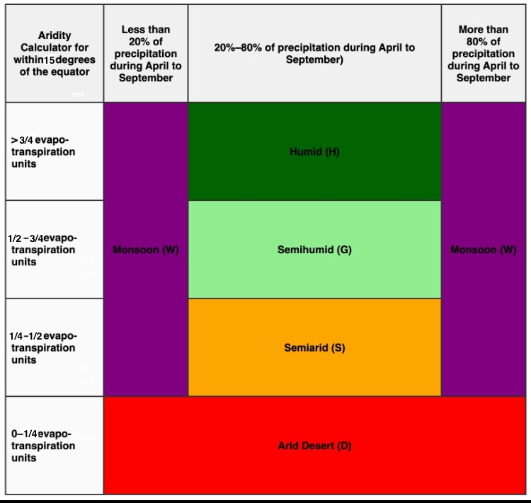
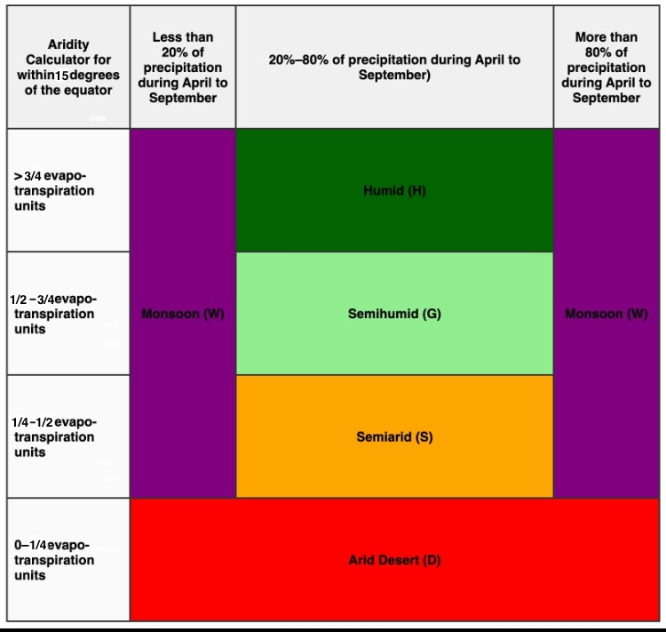

Below are charts displaying the Dickinson Temperature Classification, the Dickinson Aridity Index, and the Dickinson Percipitation Seasonality Equation, along with charts classifying the aridity zones of the Dickinson Climate Classification, based on latitude, aridity, and percipitation seasonality.

 
